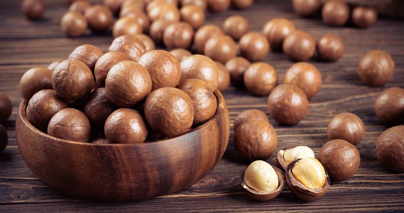

Macadamia Nuts | Soaking and Drying
These sweet, creamy, crunchy, and luxurious nuts are more often than not thought of as high-fat indulgence rather than health food. They are after all among the fattiest of all nuts.
But Macadamia nuts need to be known for more than just fat… They actually contain a good range of nutritious and health-promoting nutrients. They are a rich source of Vitamin A, iron, protein, thiamin, riboflavin, niacin and folates. They also contain zinc, copper, calcium, phosphorus, potassium, and magnesium. Just to name a few!

Let’s get Crackalackin!
It’s not often that we crack our own nuts. Growing up, my grandparents ALWAYS had a bowl of nuts in the shell on the kitchen table or coffee table in front of the television. It was just expected, and everybody just sat around cracking nuts whether they really wanted to eat them or not. :)
Pounds per Square Inch (PSI)
Did you know that macadamia nuts have the hardest shell of any nut? It takes 300 PSI of pressure to crack it! It’s no wonder we gravitate towards shelled nuts.

Why must we go through all this trouble? I find soaking nuts a very important step when it comes to my digestion. When nuts/seeds are soaked and/or sprouted in water, the germination process begins, in which the active and readily available amounts of enzymes, vitamins, minerals, proteins and essential fatty acids begin to be activated.
Nuts and seeds contain phytic acid and enzymes inhibitors which make it quite hard on the stomach and digestion. This simple process can make all the difference in how you feel after consuming them and how your body assimilates them.To read more about the importance of why our bodies benefit from soaking nuts and seeds, click (
here).
Ingredients:
- 4 cups raw macadamia nuts, shelled
- 1 Tbsp Himalayan pink salt
- 7 cups water
Preparation:
Soaking:
- Place the macadamia nuts and salt in a large glass or stainless steel bowl along with 7 cups of water.
- Leave them on the counter to soak for 8-12 hours.
- Loosely cover with a clean cloth, this allows the contents of the bowl to breathe.
- If you think that it will be longer than 8 hours before you can get to them, place the bowl in the fridge, making sure to change the water every so often.
- After they are done soaking, drain and rinse them in a colander.
- Spread the mac nuts on the mesh sheet that comes with the dehydrator.
- Keep them in a single layer and dry them at 115 degrees (F) until they are thoroughly dry and crisp. Make sure they are completely dry. If not, they could mold, plus they won’t have that crunchy, yummy texture you expect from nuts and seeds.
- The dry time will vary due to the machine you own, the type of climate you live in and how full your dehydrator is when drying them.
- Expect anywhere from 12 + hours.
- Allow them to cool to room temperature before storing.
- Store in airtight containers such as mason jars.
- Use within 1-3 months – store in the fridge
- Use within 3-12 months – store in the freezer.
Oven method: (no longer raw)
- Preheat the oven to 225 – 250 degrees (F).
- Spread the macadamia nuts on an ungreased cookie sheet in a single layer.
- You may want to spritz the nuts with salty water just before you put them in the oven to give them a light, salty taste.
- Bake for 10-12 minutes.
- Don’t leave them unattended, due to their high oil content, they will continue to roast after you remove them from the oven.
- Remove from the oven as soon as they begin to turn the lightest brown. The browning process will continue a short while after their out of the oven because of the nut oils continue to hold a high temperature.
- Cool them quickly to stop the roasting process.
- Good idea to stir them around a bit throughout the process.
- Cool for about 1 hour. Make sure that they are cool before storing.
- Note ~ You can also attempt to dry the mac nuts in the oven and keep them raw but this is tricky. You will need to set the oven on the lowest setting, keep the door ajar and hang a thermometer in the oven to watch the temperature. Nothing is impossible. With this method… good luck and do your best.
Do soaked nuts and seeds have to be dehydrated?
If you are unable to dry the nuts or seeds, it is best to only soak an amount that you can be sure will used within two days. As with any live food, mold tends to set in within days if you’re not careful. They will need to be stored in water, sealed tight and placed in the fridge. It is important to rinse them twice a day with fresh water.
© AmieSue.com